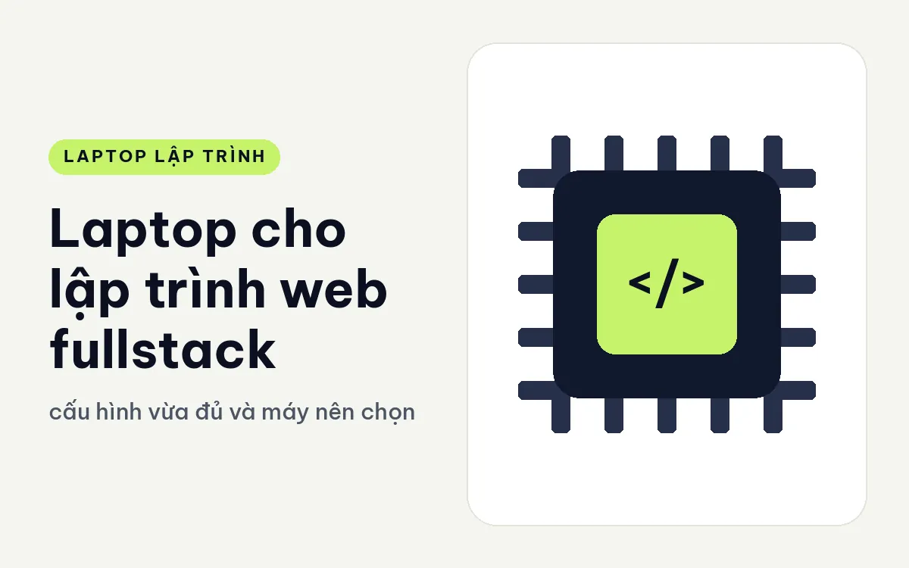
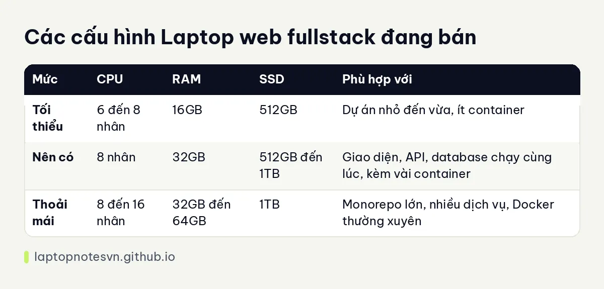

Laptop cho lập trình web fullstack - cấu hình vừa đủ và máy nên chọn

Lập trình web fullstack là stack dễ tính nhất về phần cứng, nhưng cũng dễ bị đánh giá sai. Một dự án nhỏ chạy mượt trên máy rất khiêm tốn, trong khi một dự án có giao diện, API, database và hàng chục thẻ trình duyệt mở cùng lúc lại ăn bộ nhớ khá nhiều. Hiểu tải thực của mình giúp tránh cả hai hướng: mua thiếu và mua thừa.
Phần cứng nên ưu tiên trước
RAM vẫn là yếu tố số một, dù lý do ít kịch tính hơn. Trình duyệt với nhiều thẻ, công cụ dev, trình soạn mã, máy chủ dev của giao diện, máy chủ API và database, tất cả cùng chạy. Cộng lại, 16GB dùng được nhưng chật, 32GB là mức thoải mái. Cách tính chi tiết có trong bài lập trình viên cần bao nhiêu RAM.
CPU ảnh hưởng thời gian build giao diện và chạy test. Chip 8 nhân là đủ cho đa số dự án. Dự án monorepo lớn hay build nhiều gói song song mới cần thêm nhân.
SSD ảnh hưởng thời gian cài gói. Thư mục chứa gói của các dự án Node tích lại rất nhanh, nên 512GB là mức tối thiểu hợp lý và 1TB cho nhiều dư địa.
Màn hình là thứ bạn nhìn cả ngày. Độ phân giải đủ để đặt trình soạn mã cạnh trình duyệt mà không phải cuộn liên tục, và độ sáng đủ cho làm việc ở quán cà phê. Đây là chỗ mà cảm giác dùng quan trọng hơn thông số.
Bàn phím quan trọng tương đương: gõ nhiều giờ mỗi ngày, nên độ nảy phím và bố cục rõ ràng đáng được cân nhắc.
Card đồ họa rời không cần cho web thông thường.
Cấu hình tối thiểu và nên có
| Mức | CPU | RAM | SSD | Phù hợp với |
|---|---|---|---|---|
| Tối thiểu | 6 đến 8 nhân | 16GB | 512GB | Dự án nhỏ đến vừa, ít container |
| Nên có | 8 nhân | 32GB | 512GB đến 1TB | Giao diện, API, database chạy cùng lúc, kèm vài container |
| Thoải mái | 8 đến 16 nhân | 32GB đến 64GB | 1TB | Monorepo lớn, nhiều dịch vụ, Docker thường xuyên |
Với đa số dev web, mức nên có là đích đến hợp lý, và máy cao hơn thường không đem lại khác biệt rõ.

Những mẫu máy nên cân nhắc
ThinkPad T14 Gen 7 có hai bản đều 32GB LPDDR5x dạng LPCAMM2, SSD 512GB Gen4, chip 8 nhân (Core Ultra 5 325 hoặc Core Ultra 7 355), màn 14 inch WUXGA, nặng 1,29 kg. Đây là cấu hình khớp mức nên có, hợp dev web cần máy gọn.
Ghi chú riêng ở ThinkPad T14 Gen 7 cho lập trình.
ThinkPad X1 Carbon Gen 14 có bản Core Ultra 7 365 vPro 8 nhân, 32GB LPDDR5X 8533MHz, SSD 512GB, màn OLED 2.8K 14 inch với tần số quét 30 đến 120Hz. Màn OLED rõ nét giúp đọc mã và thiết kế giao diện dễ chịu hơn. Bản cao hơn có Core Ultra 7 356H 16 nhân và SSD 1TB.
Dell XPS 13 là lựa chọn gọn thứ ba cho dev web thích thiết kế mỏng. Hãy đối chiếu từng bản cấu hình trước khi chọn, vì các bản khác nhau về RAM và ổ cứng.
Một ngày làm việc điển hình
Buổi sáng bạn mở trình soạn mã, khởi động máy chủ dev của giao diện, bật database trong container và chạy API. Sau đó là trình duyệt với tài liệu, công cụ thiết kế, trang quản lý ticket và vài thẻ thử nghiệm. Đến trưa, bộ nhớ đã dùng gần hết nếu máy chỉ có 16GB. Với 32GB, bạn vẫn còn chỗ để mở thêm bản xem trước trên điện thoại hay chạy test song song.
Buổi chiều thường nặng ở phần test và build. Đây là lúc nhân CPU có ích, nhưng chỉ vài phút mỗi lần, nên chip 8 nhân vẫn đủ.
Vài lưu ý khi cài môi trường
Dùng trình quản lý phiên bản Node. Mỗi dự án có thể cần một phiên bản khác, và công cụ này tránh được xung đột.
Đóng bớt thẻ trình duyệt. Trình duyệt thường là phần ăn RAM lớn nhất. Dùng tiện ích tạm treo thẻ không dùng nếu bạn hay mở nhiều.
Tách database ra container hoặc dịch vụ riêng. Cách này dễ dọn và dễ tái tạo hơn cài thẳng lên máy.
Dọn thư mục gói cũ. Xóa thư mục của các dự án không còn dùng để lấy lại chỗ trống.
Kiểm tra cổng kết nối. Nếu hay nối màn ngoài hoặc mạng dây, hãy chắc máy có đủ cổng hoặc chuẩn bị bộ chuyển.
Chọn theo cảm giác dùng. Với stack nhẹ như web, khác biệt giữa các máy nằm ở bàn phím, màn hình và trọng lượng nhiều hơn ở sức mạnh thô.
Khi nào nên mua máy mạnh hơn
Phần lớn dev web không cần workstation. Máy mạnh hơn chỉ có lý do khi công việc thay đổi: bạn bắt đầu chạy cụm Kubernetes cục bộ, làm thêm di động với giả lập, hoặc thử mô hình AI cục bộ. Mỗi hướng có bài riêng về phần cứng cần thiết, bắt đầu với ThinkPad P1 Gen 8 cho lập trình nếu bạn cần máy mạnh mà vẫn mang đi được.
Nếu bạn mới vào nghề hoặc làm dự án khách hàng nhỏ, một máy 14 inch với 32GB RAM sẽ đi cùng bạn nhiều năm mà không cần nâng cấp. Phần tiền dư nên dành cho màn hình ngoài hoặc ghế ngồi tốt, vì chúng ảnh hưởng đến năng suất cả ngày nhiều hơn vài nhân CPU.
Đăng ngày 09/11/2026